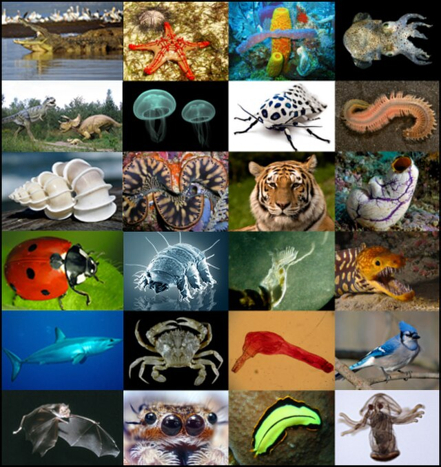

Les grandes catégories d'animaux
- Mammifères : Poils et lait maternel (ex : lion, dauphin, éléphant).
- Oiseaux : Plumes et œufs (ex : aigle, manchot, perroquet).
- Reptiles : Écailles et sang froid (ex : serpent, crocodile, tortue).
- Amphibiens : Vie aquatique et terrestre (ex : grenouille, triton, salamandre).
- Poissons : Eau et branchies (ex : requin, poisson-clown, saumon).
- Invertébrés : Pas de colonne vertébrale (ex : papillon, pieuvre, araignée).